arXiv 2605.30877 · cs.RO · v1 2026 年 5 月 29 日 · v2 2026 年 6 月 1 日 · 技术报告 · 中文精读
Wall-OSS-0.5 Technical Report: Pretrain Once, Act Anywhere
作者 X Square Robot Team（自变量机器人），贡献者 27 人；核心贡献者 Ryan Yu、Pushi Zhang、Starrick Liu、Brae Liu、Miracle Kang、Shalfun Li，项目负责人 Lucy Liang，通讯作者 Hao Wang。
关于这份精读。这篇报告在 arXiv 上以 CC BY 4.0 发布，有 v1（2026-05-29）和 v2（2026-06-01）两版，两版 PDF 大小相同（23,286 KB），这里读的是 v2。我检查了 PDF 全文，没有找到和 CC BY 矛盾的版权声明。本页按原文顺序覆盖摘要、第 1–8 节和附录 A.1–A.5，小节编号和原文一致；用自己的话整理，不逐字翻译。
图。图 1 到图 12 从 arXiv PDF 裁切（pdftoppm 250 dpi，只裁切、缩放到约 1500 px 宽、转 webp，没有改内容），图注都不含原文标题文字，标题和说明是我写的。版权归作者，裁切件按 CC BY 4.0 使用，署名 X Square Robot Team。原文的图都是位图，不能按矢量读数；少数地方我按像素读了图 11 的点，标了“读图”。表 1 到表 10 照录原文数字，并逐项重算了平均值。“读者注”是整理时核算或对照发现的，不属于论文内容，页尾有汇总。
代码。官方仓库 X-Square-Robot/wall-x，Apache-2.0，同时服务 WALL-OSS 原版和 0.5。对应 0.5 的第一个提交是 72834e7“Update Wall-X to 1.1.0 (#104)”（2026-06-15，README 的 News 写“Wall-X 1.1.0 updates the open-source training and inference stack for Wall-OSS-0.5”）；原版 FLOW / FAST 模型要回退到 97406f2（workspace/README.md:7-11）。我读的是当时最新的 ce2a1ae（2026-09-11），只读，没有运行。两者之间模型代码没有变，只改了归一化除零（normalizer.py，#112）、LeRobot 数据加载和插花示例；下文行号都指 ce2a1ae。另外核对了 Hugging Face 上 x-square-robot/wall-oss-0.5 的 config.json / config.yml（提交 b7dc23a）和 lerobot/wall-oss-0.5 的模型卡。0.5 的模型卡没有标许可。代码和论文不一致的地方两边都写。
VLA 预训练的效果几乎总是在“任务微调之后”才报告。作者想回答一个更直接的问题：预训练本身能不能产出能执行的机器人行为，还是只给下游学习提供了更好的初始化？Wall-OSS-0.5 是一个开源的 4B 参数 VLA，在 3B 的 VLM（Qwen2.5-VL-3B-Instruct）上加了动作生成部件。预训练覆盖 20 多种具身，每个 epoch 过一百万条以上的机器人轨迹，外加约 9000 万条带具身语境的多模态样本。
读完我认为最值得记住的四点：
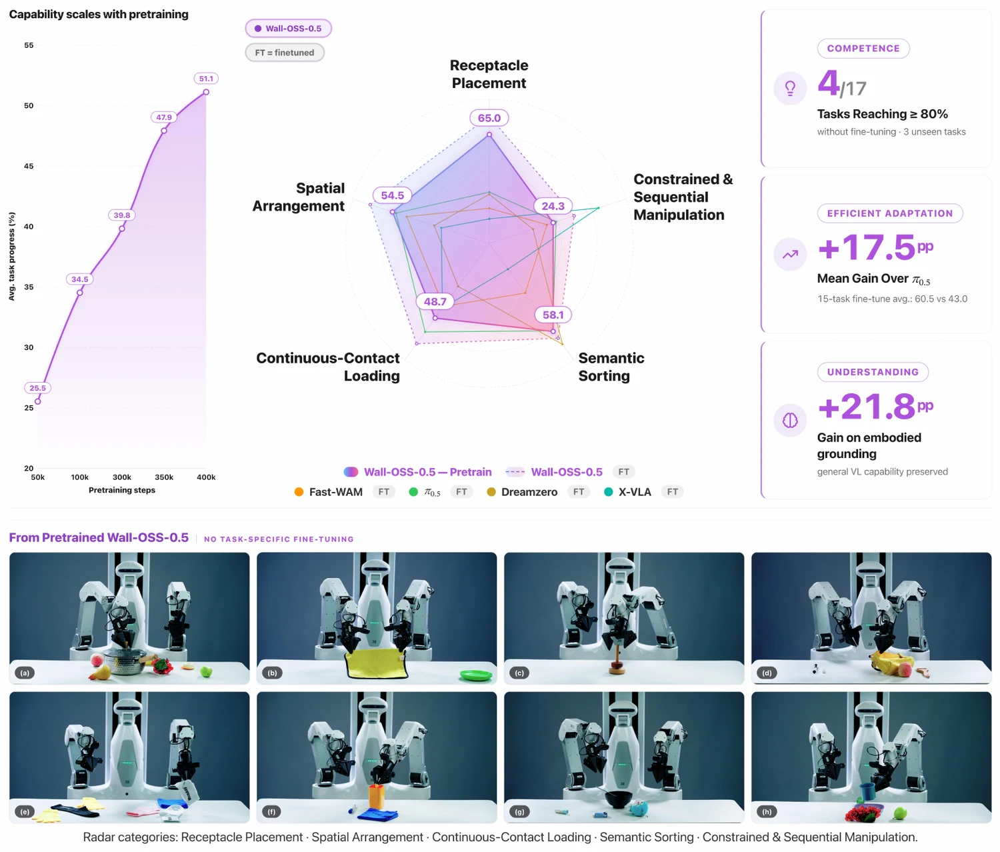
和 WALL-OSS 原版。原版是 arXiv 2509.11766《Igniting VLMs toward the Embodied Space》（本报告参考文献 [2]），同一个团队、同一个 wall-x 仓库。0.5 在主干（同为 Qwen2.5-VL-3B 起步）、MoT 结构、流匹配动作头上一脉相承；0.5 新加的是 RVQ 动作分词器、动作空间损失、联合训练的“梯度桥”解释和更大的数据。原版的结论以那一页为准，这里不展开。仓库里两者的分界见上面“代码”一段。
和同公司的世界模型 wall-ss。本报告是纯 VLA，不预测未来画面。同公司另有世界模型方向的工作，wall-x README 的 News 里列了 WALL-WM（arXiv 2606.01955），HF 上也有 wall-wm-2.0-robodojo。它们和 0.5 的关系请看那一页；本页只在关于 WALL-OSS 1.0 里回答“1.0 是不是世界模型”。
| Wall-OSS-0.5（本页） | GR00T N1 | MolmoAct2 | GR00T 2 / OpenWAM | |
|---|---|---|---|---|
| 类型 | VLA，单系统 MoT（每层 VL 专家 + 动作专家，共享注意力） | 双系统 VLA（Eagle-2 VLM + 流匹配 DiT） | VLA，离散 token VLM + 逐层读 KV 的流匹配动作专家 | 世界-动作模型（WAM），视频骨干同时预测未来画面和动作 |
| 离散动作 | RVQ 动作 token 的 CE，只在训练时用 | 无 | 有（MolmoAct2-FAST），预训练阶段只用离散 token | 无 |
| VLM 和动作头之间的梯度 | 端到端，不截断 | 语言部分冻结 | 后训练用知识隔离（detach），预训练不用 | — |
| 和本文的直接交集 | — | 相关工作“双系统”一类 | 同样把离散和连续动作合在一起训 | 本文的基线 DreamZero 是 WAM；相关工作把 Cosmos Policy 归为“视频生成世界模型”一类 |
和 LIBERO。本文只在 §5.2 用 LIBERO（论文）做“动作空间损失 vs 速度损失”的从头训练对照，没有报告 0.5 的 LIBERO 微调成绩。wall-x 里有 LIBERO 的微调配置和评测脚本（复现要点）。各家 LIBERO 协议的差别见 OpenWAM 页的 LIBERO 问答。
问题。语言和视觉的基础模型，预训练后直接就能回答问题、跟指令。机器人这边证据没那么直接：VLA 继承了 VLM 的感知和推理，但最好的结果通常都在下游微调之后报告。作者把问题收窄成可操作的一句：只靠 VLA 预训练，能不能得到一个在真机上可执行的策略？
“面向部署的预训练”。为此预训练检查点要满足三件事：开箱就能做有用的操作；保留足够的视觉-语言能力，能跟指令；给下游适配更好的先验，让微调更省数据。
主要经验结果。17 个真机零样本任务（语义、刚体、柔性、精细、长程五类），不经任务微调，几个任务已经很高：方块分拣 100、水果分拣 96、套圈 86、没见过的柔性任务拉紧绳子 82。没见过的任务和见过的任务在预训练过程中一起上升，说明学到的是能复用的操作能力，而不只是记住任务模板。微调后，在 15 个真机任务上平均任务进度 60.5，比 π0.5 高 17.5，操作类 10 个任务上差距扩大到 26。多模态评测显示整体稳定，具身定位提高 21.8。
方法核心：梯度桥接联合训练。VLA 训练的矛盾在于：连续流匹配是天然的执行接口，但它对预训练 VLM 主干的更新很弱；离散动作 token 的下一词交叉熵是 VLM 原生的接口，强烈塑造主干，但解码出的离散动作太粗，不够精确控制；冻结或截断梯度能保住 VLM 先验，但精确的动作目标就塑造不了主干。本文的解法是三者分工：
三个设计。(1) MoT 主干，每层分 VL 专家和动作专家：视觉、语言和离散动作 token 走 VL 专家，连续动作走动作专家；梯度仍端到端穿过两个专家，这是“路由分解”，不是梯度隔离。(2) 视觉对齐的 RVQ 动作分词器替代规则式的 FAST，让离散 token 成为更有语义的训练接口。(3) 动作空间监督：把流匹配的损失放到原始动作空间，而不是速度场上，收敛更快、更稳。
数据和推理。单阶段训练，三种来源：高质量自采操作数据、精选的开源多具身轨迹、9000 万条多模态样本（其中一部分是从动作轨迹合成的“具身桥接”样本）。推理侧用 CUDA Graph 和自写融合核，比 PyTorch eager 端到端快 4 倍，高分辨率下 15 Hz 实时控制。
贡献（原文四条）：能直接在机器人上评测的预训练 VLA（开源 4B，3B VLM 主干，17 任务零样本，448 分辨率 15 Hz）；一套联合训练配方（动作 CE 是桥、多模态 CE 是锚、流匹配是执行目标，三者缺一不可）；整合的结构和训练设计（MoT、RVQ 分词器、动作空间监督，部署时的动作接口不变）；多轴评测（开箱真机、微调后真机、多模态）。
表 4：60.5 − 43.0 = 17.5，是百分点；相对提高是 17.5 / 43.0 = 40.7%。图 1 的卡片写的是“+17.5pp”，图 1 图注也说明 pp 是百分点，所以摘要和正文写的“17.5%”应读作 17.5 pp。同样：“操作子集差距扩大到 26%” = 61.1 − 35.0 = 26.1 pp（相对 74.6%）；“比 DreamZero 高 27.1%” = 60.5 − 33.4 = 27.1 pp（相对 81.1%）；“具身定位提高 21.8%” = 30.8 − 9.0 = 21.8 pp（相对 242%）；图 7 的“+9.8%” = 83.75 − 73.96 = 9.79 pp。全文这类“%”都是绝对差。
预训练围绕三种数据形态组织：离散动作 token 在训练中塑造 VLM 主干；连续流匹配在推理时给出动作；带具身语境的多模态数据保住视觉-语言先验。这一节讲结构、分词器、损失和动作接口，全部在一个训练阶段里实现。
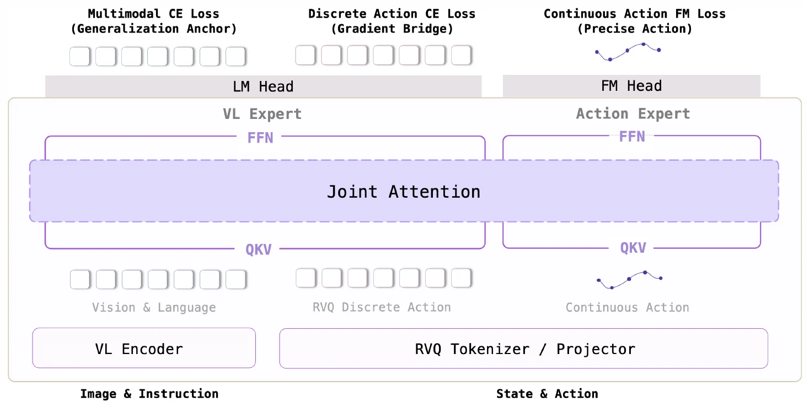
从 Qwen2.5-VL-3B-Instruct 初始化，扩成 MoT 主干，总参数超过 4B。原来的 3B VLM 保留为 VL 专家；新加的动作专家和连续动作头里的动作投影提供额外的动作生成能力。四种 token 流——视觉、语言、本体感觉、离散动作——走 VL 专家；带噪声的连续动作 token 走动作专家，由流匹配训练。
这是路由分解，不是梯度截断。两个专家共享同一个序列级注意力上下文，动作专家生成连续动作时能看到视觉和语言信息。注意力掩码让离散动作 token 和连续动作 token 在前向里互相看不见，所以两条动作通路可以独立训练、独立评测；同时流匹配的梯度经共享注意力流回 VL 专家，没有被挡住。
代码：HF 的 config.json 写 num_experts: 2，VL 专家 hidden 2048、FFN 11008，动作专家 hidden 1024、FFN 2048，36 层，attention_moe / mlp_moe / norm_moe 都开；按 token 类型路由（wall_x/model/core/action/moe.py:9-26，TokenTypeRouter 取 token_types % num_experts），连续动作 token 的类型来自输入里 <|action|> 的位置（data/backends/lerobot/loader.py:654）。“互相看不见”在 model/core/attention/mask.py:100-110：连续动作行对离散动作预测位置的列置零。HF 上的检查点共 4,162,224,832 个参数（BF16 4,158,769,152 + F32 3,455,680），和“超过 4B”一致（读者注 18）。
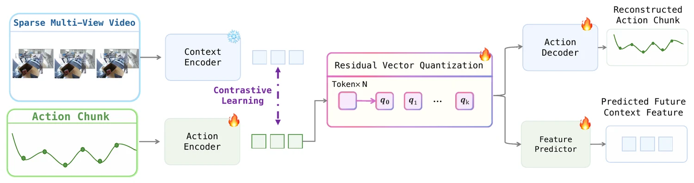
用离散动作 token，是因为下一词交叉熵是和 VLM 主干最直接兼容的训练接口。所以分词器的任务不只是“重建误差小”，还要给主干训练暴露有结构的动作语义。作者因此用学出来的视觉对齐 RVQ 分词器替代 FAST，在跨多种具身的异构机器人数据上训练。
它在增量动作空间里工作，结构是“编码器 – RVQ – 解码器”：编码器用时间交叉注意力压缩以观测为条件的动作块；RVQ 码本的前几级抓粗的运动结构，后几级补细的残差；解码器以观测状态为条件重建动作序列。除了重建，还有三个目标一起塑造 token 空间：视觉-动作对齐（把动作潜变量拉向 VLM 的视觉特征）、下一帧预测（让 token 编码动作的后果）、DCT 域重建（压制高频抖动）。结果是可重建、视觉对齐、物理上平滑的离散表示。
原文没有给码本大小、级数、压缩比、对比损失的形式和各项权重。
wall-x 的动作分词器注册表只有两项："fast": FastTokenizerMixin 和 "spatialvla": SpatialVLATokenizerMixin（wall_x/model/qact/tokenizer_mixin.py:938-941）；FAST 分支从 action_tokenizer_path 加载外部处理器（:312-318）。代码注释里提到“v3.1 delta”分词器和“RVQ layer accuracy”（tokenizer_mixin.py:232，trainer/adapters/vla_model_adapter.py:279），但对应的类没有发布。HF 的 wall-oss-0.5 仓库里有 ar_normalizer_action.pth，没有分词器权重。
同公司 2026-06-18 在 HF 发布了 X-Tokenizer，论文 arXiv 2606.14752（2026-06-07，CC BY 4.0），摘要写的是 RVQ 变体（SRQ）、对比对齐到基础模型的表示空间、下一帧视觉-语言特征预测、26 维动作布局、“作为表示塑造信号插进离散-连续混合的 VLA”，作者里有 Lucy Liang、Pushi Zhang、Hao Wang 等本报告的作者。我的推断：它就是或接近本报告的“视觉对齐 RVQ 分词器”。但本报告没有引用它，X-Tokenizer 的模型卡写的是 18 种具身、2048 码 × 4 级、压缩比 4，和本报告也没有逐项对照，未核实。
预训练在一个阶段里同时优化三个目标。(1) 动作 token 交叉熵自回归地预测 RVQ 动作 token，是 VL 编码器和动作专家之间的梯度桥：一个强的、VLM 原生的信号，让主干对动作敏感。(2) 多模态交叉熵在带具身语境的视觉-语言样本上训练 VL 编码器，是保住指令跟随、视觉定位和具身场景理解的锚。(3) 流匹配训练动作专家生成推理时用的连续动作块。离散通路主要是训练时的通路；连续通路是部署时的通路。
动机来自消融里的梯度动态：流匹配定义了执行目标，但早期之后它对 VLM 主干更新的贡献稳定在约 5%，主要更新来自两个交叉熵。动作 token CE 和动作生成方向一致，把主干推向与控制相关的特征；多模态 CE 把更新拴在原来的视觉-语言先验上。所以本文保留端到端梯度，不用 π0.5 的 stop-gradient：那 5% 的流匹配残差对动作质量仍有用，而主干的塑造主要靠动作 token CE。
总目标：
\(\mathcal L_{\text{act-CE}}\) 是自回归 RVQ 动作 token 损失，\(\mathcal L_{\text{mm-CE}}\) 是多模态下一词损失，\(\lambda_{\text{act}}=\lambda_{\text{mm}}=0.01\)。在动作空间监督下，\(\mathcal L_{\text{flow}}\) 比交叉熵小大约两个数量级；共同的 0.01 把交叉熵压到和流匹配可比的量级，避免语言式预测压过动作学习。动作 CE 和多模态 CE 之间的相对分量由批次构成决定：动作数据和多模态数据按 9 : 1 混合。推理默认走连续流匹配通路，它和离散通路靠注意力掩码解耦；离散通路只在训练时承载梯度桥。
§1 和 §2.2.1 的三条梯度分析——流匹配对主干更新的份额“约 5%”、动作 CE 和流匹配梯度方向“正相关”、多模态 CE 和动作优化“大体正交”——在全文 12 张图、10 张表里都找不到对应的曲线或数字。§5.1 只给了四种策略的任务进度和一句流损失收敛的定性描述。这些说法目前只能当作者的陈述，未核实。
能核的是 §5.1 的区间：“去掉任一信号会掉 7.4–25.1 个百分点”= 57.00 − 49.58 = 7.42 到 57.00 − 31.93 = 25.07，对得上。正文写只用流匹配 36.6%，图 10a 标的是 36.68，四舍五入应是 36.7。
wall_x/model/core/vla_mixin.py:583-655：所有带标签的 token（离散动作 token 和多模态文本 token 都在 labels 里）一起算交叉熵，对 token 取平均，再乘同一个 config.ar_loss_weight 加进总损失（:655）；流损失直接相加（:702），权重 1。所以代码和式 (1) 的“λ_act = λ_mm”一致。但因为是按 token 平均，两种 CE 的实际相对分量取决于一个批次里各自的 token 数，而不只是 9 : 1 的样本比（我的推断；多模态混合的数据管线没有公开，无法核实 token 数）。权重值：仓库 workspace/models_config/qwen2_5_moe_flash.json 写 ar_loss_weight: 1；LIBERO / ManipArena 示例 yml 写 0.01；HF 的 0.5 config.json 没有这个键，按 trainer_utils.py:219 由训练 yml 决定。yml 里的 flow_loss_weight: 1.0 在 Python 里没有被读取。
流匹配从带噪动作块出发，学一个把噪声运到干净动作的速度场。用线性高斯路径：
τ = 0 是纯噪声，τ = 1 是干净动作。沿用 π0 的做法，把时间步采样偏向高噪声：
因为 τ = 0 是纯噪声，这个变换把概率质量集中在高噪声一侧。
假设。机器人动作序列低维、平滑，任务相关的结构主要在低频的轨迹形状里，而不是高频细节。作者因此假设：高噪声段决定能否恢复轨迹的整体形状，低噪声段主要补残差细节；和自然图像（高低频都有丰富语义）不同，高噪声段的监督质量基本决定了生成上限。于是网络仍输出速度，但损失定义在恢复出的动作上：
它等价于在速度空间里乘 \((1-\tau)^2\) 的加权损失：
这个权重强调高噪声步（整体轨迹在这里成形），和上面的平滑性假设一致。它和扩散模型里的 x-prediction（Li 与 He 2025）相关，但动机来自机器人动作的频谱结构，不是方差上的考虑。§5.2 的对照实验支持这个选择：收敛更快、峰值更高、训练更稳。
把式 (2) 代入式 (4)：\(A^\tau+(1-\tau)(A-\epsilon)=\tau A+(1-\tau)\epsilon+(1-\tau)A-(1-\tau)\epsilon=A\)，所以速度预测准确时 \(\hat A=A\)；\(\hat A-A=(1-\tau)\,(f_\theta-(A-\epsilon))\)，平方后正是式 (6) 的 \((1-\tau)^2\) 权重。τ = 0（纯噪声）权重 1，τ = 1（干净）权重 0。
式 (3)：Beta(1.5, 1) 的累积分布是 \(u^{1.5}\)，所以 \(P(\tau<0.5)=P(u>0.5005)=1-0.5005^{1.5}\approx 0.646\)，E[τ] = 0.999 × (1 − 0.6) ≈ 0.40。采样偏向高噪声，再乘上 \((1-\tau)^2\)，高噪声段被强调两次。
代码：data/backends/lerobot/loader.py:664-692 先抽 np_rng.beta(1.5, 1.0)，再 time = 1 - sample，再乘 s，和式 (3) 一样；model/core/action/processor.py:169-172 是式 (2)，flow = action_chunk - noise 是速度目标；:288-294 在 use_x_pred=False 时由速度算 x_pred = (1 - t) * v_pred + noisy_action，即式 (4)；:296-302 在 use_x_loss=True 时对 x_pred 和真动作算 MSE，即式 (5)。HF 的 0.5 config.json 正好是 use_x_pred: false、use_x_loss: true、beta_alpha 1.5、beta_beta 1.0、s 0.999、num_inference_timesteps 10。代码默认 use_x_loss=False（configuration_qwen2_5_vl.py:245），所以用仓库自带的 qwen2_5_moe_flash.json 从头训，得到的是普通速度损失；LIBERO 示例的注释提到的 mot_flash_mask_causal_xloss.json 不在仓库里。
模型沿用 VLM 的对话格式。动作预测的输入是：
[System] 具身提示 [User] Observation: {相机}: ⟨图像 token⟩ … Instruction: {任务} Proprioception: ⟨本体 token⟩ [Assistant] ⟨action_ar_token⟩ ⟨action_flow_token⟩ × N
⟨action_ar_token⟩ 是交叉熵通路用的离散 RVQ 动作 token；⟨action_flow_token⟩ 是流匹配通路用的连续动作查询 token；N 是预测时域里的帧数。多模态理解样本只输出文本，没有动作 token。相机路数任意，按数据源采。每个任务既有目标级指令（“收拾桌子”），也有步骤级子指令（“把它扔进垃圾桶”），训练时每步随机选一种粒度；另外用改写降低对措辞的过拟合。本体感觉离散化成文本数字 token，训练时随机丢弃或扰动，减少对无噪声状态的依赖。推理时不解码离散 token，由动作专家多步去噪生成连续动作块，两条通路靠注意力掩码在前向里解耦。
动作空间。用相对动作表示和 6D 旋转（不用欧拉角或四元数，避开 SO(3) 的不连续和歧义）。模型动作空间是 26 维：每只手臂相对当前末端位姿的 3D 位置、6D 旋转和 1D 夹爪（两臂共 20 维），加上 3D 底盘速度、1D 升降高度、2D 头部。离散和连续通路都预测 1 秒的动作时域，帧数按各数据源的控制频率调整。
HF config.yml 的 dof_config：左右各 ee_cartesian_pos_relative 3 + ee_rotation_6D_relative 6 + gripper 1，再 velocity_decomposed 3 + height 1 + head_actions 2，合计 (3+6+1)×2+3+1+2 = 26；action_horizon_flow 和 action_horizon_ar 都是 32；图像 448；use_state_string_representation: true、state_bins: 512，对应“本体离散成文本数字 token”（离散化在 data/backends/lerobot/utils.py:541-547，np.digitize 到 [−1, 1] 的等宽桶）。
不同之处：(1) 系统提示。公开代码固定写“You are a helpful assistant.”（utils.py:356-357），HF config.yml 的 use_embodied_system_prompt_ratio: 0.0，没有看到“具身提示”。(2) 公开的 LIBERO / ManipArena 微调示例都写 use_state_string_representation: false，本体改走线性投影 propri_proj（action/processor.py:43-51），和预训练的文本 token 方式不同；这对微调效果有没有影响，论文和文档都没说，未核实。(3) LIBERO 示例用 3 维 ZYX 欧拉增量旋转加 19 维零填充（workspace/example/libero.yml:32-37），不是 6D；ManipArena 示例用 6D 相对旋转加 6 维填充。填充维靠 dof_mask 不进损失。按示例注释（libero.yml:25-27“the lerobot collator right-pads”），填充是补在右侧的：LIBERO 的 7 维占的是 26 维向量的前 7 位，而预训练布局里前 7 位是左臂位置 3 维和左臂 6D 旋转的前 4 维。也就是说，微调时同一个槽位的语义和预训练不同，靠的是按数据集分开的归一化和微调本身（我的推断，没有运行验证）。
作者发现 Muon 在联合训练里收敛更快、更稳。Muon 用在每个专家的二维参数上，视觉嵌入和 LM 头用 AdamW。Muon 先把动量正交化再作为更新，更新的谱范数被归一，和梯度大小无关；这很关键，因为动作专家和 VL 专家的梯度尺度差别很大。
为了在大规模上用 Muon，作者写了分布式运行时 DMuon，兼容混合并行：用“最长处理时间优先”的负载均衡给每个矩阵参数指定唯一的属主 rank；Newton–Schulz 更新只在属主上做一次；状态同步走“归约到属主”加步后异步广播，广播在专用 CUDA 流上，尽量和下一次前向重叠；属主本地的 Newton–Schulz 还用了利用对称性的核和按形状自动调优。在他们的训练栈里，Muon 带来的额外优化器开销从朴素实现的约 2 倍“前向 + 反向”时间降到约 0.02 倍，约 100 倍的降低。
超参数。预训练有效全局批大小 8192，bf16 混合精度，梯度裁剪 1.0，余弦学习率加线性预热，峰值学习率 1 × 10⁻⁴。图像保持长宽比、长边缩到 448。所有预训练数据都过滤掉静止帧，防止过拟合到停顿动作。微调学习率 5 × 10⁻⁵，所有模块都训，保留同样的“离散 + 连续”联合目标；§5.1 显示这比只用流匹配微调有大的相对提升。
代码：DMuon 是单独的包（X-Square-Robot/dmuon），wall-x 里只有接入层 wall_x/trainer/optimizer/dmuon/utils.py:54 get_dmuon_optimizer，按“专用 / Muon”和“非专用 / AdamW”分组。仓库的训练模板 workspace/example/lerobot/qwen2_5_lerobot_template.yml 用 optimizer_type: dmuon、学习率 1e-4、余弦、预热 1000 步；LIBERO 和 ManipArena 示例用 adamw、5e-5，学习率和论文的微调值一致，但优化器不是 Muon（读者注 13）。
实时控制是上真机的 VLA 的硬要求：闭环里每多一毫秒延迟，执行就晚一点，跟踪动态目标变差，成功率降低，所以几十赫兹是功能前提。这和现代 VLA 的趋势矛盾：大视觉编码器、十亿级语言主干、迭代式动作解码器全在一次前向里。高分辨率输入更贵：ViT 的计算量随图像 token 数平方增长，更长的视觉上下文又撑大语言主干的 KV cache，每次注意力都变慢。
作者按剖析结果从两方面优化。(1) 去噪步是访存受限的：GPU 核执行时间比 CPU 发射延迟还短，CPU 调度成为瓶颈，GPU 在核之间空转。因为每步的计算图是静态的，把整个去噪步捕获成一个 CUDA Graph，CPU 调度移出关键路径。(2) 除了 GEMM 和注意力，RoPE、RMSNorm 等逐元素和归约算子单个都便宜，但分开执行时会产生大量 HBM 读写。作者把它们融合成在寄存器里算完的自定义 CUDA 核，比原生实现快 2–10 倍。
结果。单张 RTX 5090，三路图像，标准 T = 10 步去噪：224 × 224 约 21 Hz，448 × 448 约 15 Hz，比 PyTorch eager 端到端快 4 倍。448 下 eager 基线受 ViT 平方开销和 KV cache 拖累最重，相对加速仍然明显。作者说这只是部分探索。
wall_x/utils/cudagraph_wrapper.py:14 定义了 CUDAGraph_Wrapper（按批大小分桶捕获），但整个仓库没有任何地方实例化它；服务入口只会设环境变量 ENABLE_CUDA_GRAPH（_vendor/harrix/serving/launch_serving.py:139, 215-217）。随包编译的 CUDA 算子（model/core/ops/csrc/binding.cu:49-68）是 RoPE、M-RoPE、旋转位置、窗口索引和 MoE 置换，没有 RMSNorm；ops/norm.py:22-30 试图导入 _cuda_wrappers.Rmsnorm，这个类不存在，会退回外部的 external_accel 模块（不公开）或 PyTorch 实现。我的推断：用公开代码大概达不到论文的 15 Hz；我没有运行，未核实实际速度。去噪循环本身在 modeling_qwen2_5_vl_act.py:2064-2160：前缀前向一次缓存 KV，之后 10 步欧拉积分只跑动作 token。
自己画的 · 11 幕 3D 框架动画
总览（预训练即可执行）、26 维统一动作空间和跨具身填充、对话式输入序列和注意力掩码、MoT 路由、RVQ 分层量化（玩具）、三个损失和四种训练策略（图 10）、动作空间监督的权重和时间步分布、数据配方和平方根采样、10 步去噪推理、零样本评测随检查点变化（表 5/6）、微调对比和多模态变化（表 8、表 7）。可以暂停、拖进度、旋转画面、切换开关。
预训练数据把多样的高质量自采操作数据、开源多具身数据集和定向的多模态语料合在一起，在任务多样性、具身覆盖和数据源分布上做了平衡。
自采和开源数据的动作表示统一到同一套语义：双臂末端位姿、关节位置、夹爪状态、底盘运动、升降 / 腰部、头部。同一平台内的相机流按时间戳同步，但保留各平台自己的相机数量和视角。细节在 §3.1.3。
自采数据是操作预训练语料的核心，覆盖几千个不同任务。
具身构成。两类平台：桌面双臂系统和移动操作机器人，覆盖固定工作空间和移动操作。另外有一个和具身无关的采集设备 XRZero-G0（本公司的专有设备，arXiv 2604.13001），能低成本在各种场景采数据而不绑定某种机器人形态，扩展环境和任务的多样性。
场景和任务分布。场景有真实的非结构化环境（家庭、工业、办公，带自然杂乱和光照变化），也有受控的采集间（提高复现性和批次一致性）。任务按三个互补的轴打标签：操作复杂度、轨迹时长、特殊属性（例如空间推理、柔性物体交互），既有工业相关操作也有日常行为。这些标签用于平衡训练混合（§3.1.3），避免少数大体量任务占满语料。
任务切分和语言标注。每条轨迹有两种指令：只说最终目标的简短指令，和按时间顺序列出中间子目标和关键动作转换的详细指令；两种都用大语言模型扩写，保持语义不变。同时把长的遥操作轨迹切成时间上连贯的子轨迹，每段对应一个原子子目标并配上指令。合起来得到几千条基础指令和几万条改写。
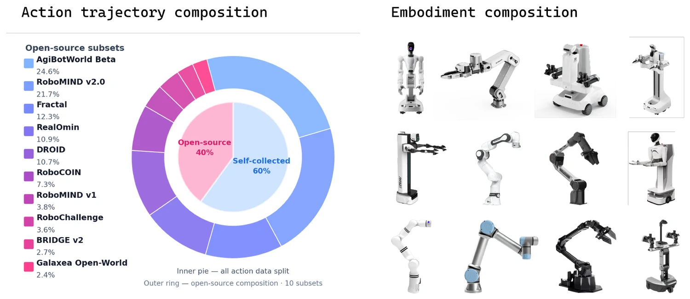
开源操作数据不用额外采集就能扩展具身和场景覆盖。作者对一批高质量开源数据集做统一整理（格式对齐、元数据核验、跨源字段映射），按时间戳连续性、动作-观测合理性和帧异常过滤样本。保留的 10 个子集见图 4：AgiBot World Beta（论文）、RoboMIND v1 和 v2.0（v1、v2）、Fractal / Google Robot（RT-1 的数据）、RealOmin、DROID（论文）、RoboCOIN（论文）、RoboChallenge（论文）、BridgeData V2、Galaxea Open-World（论文）。§1 还引了 Open X-Embodiment。
图 4 外圈 10 个比例相加 = 24.6 + 21.7 + 12.3 + 10.9 + 10.7 + 7.3 + 3.8 + 3.6 + 2.7 + 2.4 = 100.0，自洽。HF 0.5 模型卡的“Supported Robot Embodiments”列了 56 个 norm_key：自有的 ex_normal、x2_normal，以及 24 个开源键（含 RH20T、DobbE、UMI-biarm、furniture_bench、taco_play 等多个 OXE 子集）、RoboChallenge 4 个、RoboCoin 8 个、RoboMind 18 个。其中有不少不在图 4 的 10 个子集里。我的推断：这是归一化统计里保留的键，不一定都进了 0.5 的预训练；论文说的“20 多种具身”也没有逐一列出，未核实。
多源机器人数据在质量、格式和动作表示上很不一致：存储格式和字段命名不同，同一个具身在不同数据集里的动作定义也可能不同（坐标系朝向、旋转表示约定、夹爪开合的正负）。不处理就会给联合训练带来噪声。所以所有带动作标注的数据都过一遍系统的预处理：
代码：这些预处理和采样都不在 wall-x 公开仓库里。公开的是把自家格式转成 LeRobot 的 x2robot2lerobot.py、旋转布局转换 data/backends/lerobot/rotation_layout.py 和 LeRobot 加载器；1.0-lite 的 RoboDojo 配置里出现了 task_balance: static_count 一类的采样器键，0.5 的公开代码没有。
多模态数据是联合训练里的“泛化锚”：它承载多模态 CE，在动作 token CE 把主干推向控制的同时，把主干拴在有依据的视觉-语言理解上。除了通用的视觉-语言对齐，它还监督物体识别、场景构成、空间关系、可供性和与任务相关的交互线索。总共约 9000 万条：7800 万条开源样本，加 1200 万条直接从动作轨迹构造的具身桥接样本。训练时动作样本和多模态样本按 9 : 1 的批采样比例混合：多模态样本只算自回归下一词 CE，动作轨迹同时提供动作 token CE 和流匹配监督。
| 类别 | 任务类型 | 数据集 |
|---|---|---|
| 通用视觉-语言 | 描述、VQA、指点、推理 | CapsFusion、Cambrian、PixMo-Cap、COCO、VQAv2、PixMo-Point、OneThinker |
| 具身感知 | 定位、指点、空间、可供性 | RoboPoint、SpaceThinker、OpenSpaces、SpaceOm、RefSpatial、CrossPoint、SenseNova-SI |
| 具身认知 | 任务 VQA、交互、长程推理 | Robo2VLM、EO-Data、RoboVQA、Cosmos-Reason1（本站精读） |
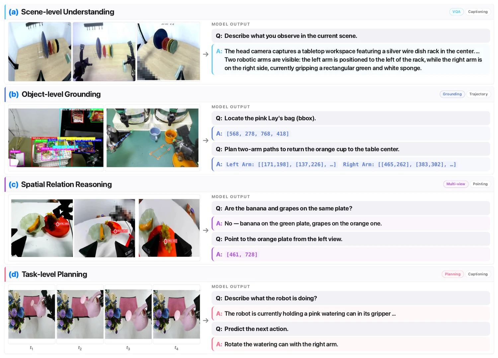
开源多模态数据有两个目标：保持通用 VLM 能力，注入和具身相关的理解。分三类（表 1）：通用视觉-语言（描述、通用问答、指点、开放推理）；具身感知（物体定位、可供性、空间推理）；具身认知（任务 VQA、交互理解、长程推理）。开源数据经过严格质检，用模型核验加人工标注过滤不准确、信息量低和过度重复的样本。
具身桥接数据由自动管线直接从动作预训练语料构造。叫“桥接”是因为这些样本和动作学习来自同样的轨迹、观测和任务语境，天然和可执行行为对齐。按四个层次组织（图 5）：物体理解（定位、指点、二维轨迹预测、属性 VQA）；空间理解（物体间关系、多视角指点）；场景理解（场景描述、场景级 VQA）；任务理解（任务进度预测、可供性估计、下一步动作规划）。指点和定位任务引入专门的空间 token，坐标都统一成文本：<box>[x1,y1,x2,y2]</box> 和 <point>[x,y]</point>。
代码：多模态样本的加载和 9 : 1 混合不在公开仓库里。归一化器会跳过名为 x2_multimodal 的数据集（model/core/action/normalizer.py:286），说明内部训练栈里多模态样本以这个名字混在批里（我的推断）。
不微调，直接在真机零样本套件上评测。共 17 个任务：12 个“见过”（来自预训练数据分布内）和 5 个“没见过”（留出的任务配置，在当前具身上没有采过完全相同的任务），考的是泛化和迁移。任务分五个维度：语义理解、刚体操作、柔性物体操作、精细操作、长程多步操作。每个任务按预设评分规则打分（任务进度，满分 100，10 条轨迹），比二值成功率更能反映“部分完成”的程度。训练中抽多个里程碑检查点，追踪能力变化。
表 2 是见过和没见过任务在各检查点的平均任务进度（每个任务的数在附录 A.1）。先看最强的：400k 检查点上，6 个任务不微调就 ≥ 60%（表 3），其中 4 个 ≥ 80%，2 个是没见过的任务。没见过的柔性任务拉紧绳子达到 82%，让“纯模板记忆”的解释不太可能。图 6a 是见过 / 没见过的平均趋势，图 6b 按五个能力维度分组。
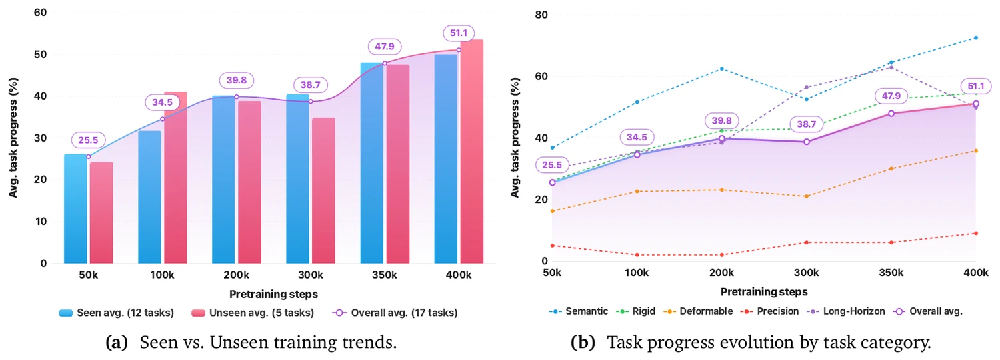
| 50k | 100k | 200k | 300k | 350k | 400k | |
|---|---|---|---|---|---|---|
| 见过平均（12 个任务） | 26.1 | 31.7 | 40.1 | 40.4 | 48.1 | 50.0 |
| 没见过平均（5 个任务） | 24.2 | 41.0 | 38.8 | 34.8 | 47.6 | 53.6 |
| 总体平均（17 个任务） | 25.5 | 34.5 | 39.8 | 38.7 | 47.9 | 51.1 |
用附录表 5（12 个见过任务）和表 6（5 个没见过任务）重算：见过平均 26.06 / 31.73 / 40.15 / 40.38 / 48.06 / 50.04，没见过平均 24.2 / 41.0 / 38.8 / 34.8 / 47.6 / 53.6，总体（17 个任务直接平均）25.51 / 34.46 / 39.75 / 38.74 / 47.93 / 51.09，四舍五入后和表 2 全部一致。注意总体平均是按任务数加权（12 : 5），不是两个平均的平均（后者 400k 会是 51.82）。
图 6b 的类别曲线在 400k：语义（方块、水果、数字、开关、玩具篮，5 个）(100 + 96 + 54 + 55 + 58) / 5 = 72.6；刚体（套圈、杯子、擦桌、锅盖）(86 + 64 + 38 + 30) / 4 = 54.5；柔性（毛巾、摆台、碎纸、绳子、倒豆）(10 + 9 + 18 + 82 + 60) / 5 = 35.8；精细只有插充电器 1 个任务 = 9；长程只有插花和包裹 2 个 = 49.75。和图上读到的一致。“精细”和“长程”两类样本太少，曲线的起伏主要是单个任务的波动。
| 任务 | 类别 | 见过 / 没见过 | 任务进度 |
|---|---|---|---|
| 方块分拣 Block Sorting | 语义理解 | 见过 | 100% |
| 水果分拣 Fruit Sorting | 语义理解 | 见过 | 96 |
| 套圈 Ring Stacking | 刚体操作 | 见过 | 86 |
| 拉紧绳子 Rope Tightening | 柔性物体操作 | 没见过 | 82 |
| 放杯子 Cup Grasping | 刚体操作 | 见过 | 64 |
| 倒豆子 Bean Pouring | 柔性物体操作 | 没见过 | 60 |
语义定位能迁移到动作。图 6b 里语义理解是最强的维度（400k 平均 72.6%）。几个高分的见过任务——方块分拣 100、套圈 86、水果分拣 96——都要先把“哪个颜色对应哪个位置”“圈该套到杆上”这类视觉语义落到画面上，再执行操作。没见过的任务里，玩具放进篮子在 400k 是 58%，预训练中最高到过 72%，说明 VLM 的语义知识在迁移到动作，同时有些留出任务对检查点很敏感。作者认为这和训练设计一致：动作 token CE 让动作通路接触到 VLM 的语义先验，所以以语义决策为主的任务受益；需要精确低层控制的任务（精细插接、柔性折叠）仍卡在执行上。
没见过的任务和见过的一起变好。没见过任务平均 24.2 → 53.6，见过任务 26.1 → 50.0，都整体上升，400k 时没见过（53.6）略高于见过（50.0）。两组难度没有配平，所以看趋势比看绝对高低更有意义。作者也提醒，大规模预训练下“没见过”是相对的：这些任务没有在当前具身上作为相同任务采过，道具组合是全新的，但预训练语料里的开源数据可能有语义相关的操作经验。所以这里的泛化主要是跨场景、跨道具的技能迁移，不是从零学会全新技能。
零样本能力有明确的边界。按 400k 的成绩分三档：
能力在预训练中“涌现”。多个任务在某个阶段突然进步：方块分拣在中后期从约 50% 跳到 100%；套圈在 350k 达到 100%，400k 仍有 86%；水果分拣从 61% 升到 96%。作者把这种“阶梯式”出现类比大语言模型的涌现能力：先在某个检查点突破，再稳定进入整体策略。400k 时总体平均仍在上升（见过 50.0、没见过 53.6），预训练可能还没饱和。
按表 5、6 的 400k 列：≥ 60 的正好是表 3 的 6 个；40–60 档原文列了 4 个“等”，漏掉的是没见过的玩具放进篮子 58；< 20 档原文列了 3 个，碎纸 18 也在这一档但没列。20–40 之间没有档：擦桌子 38、锅盖 30 两个没见过任务落在这里，原文没有归类。“从 61% 升到 96%”是 350k → 400k（300k 和 350k 都是 61）；“方块从约 50% 跳到 100%”是 300k 的 51.5 → 350k 的 96 → 400k 的 100；“玩具篮最高 72%”是 350k。都对得上。
对比两个主流范式的预训练机器人基础模型：VLA 范式的 π0.5，和世界-动作模型（WAM）范式的 DreamZero。三个模型都从各自官方预训练权重出发，在 15 个真机任务（10 个操作 + 5 个推理）上用相同的微调数据（每任务约 500 条示范）和评测协议微调、评测。
总体。Wall-OSS-0.5 平均任务进度 60.5%，比 π0.5（43.0%）高 17.5，比 DreamZero（33.4%）高 27.1，15 个任务里 10 个最高；操作子集（61.1 对 35.0）和推理子集（59.3 对 58.9）都领先。
| 模型 | 操作（10） | 推理（5） | 总体（15） |
|---|---|---|---|
| Wall-OSS-0.5 | 61.1 | 59.3 | 60.5 |
| π0.5 | 35.0 | 58.9 | 43.0 |
| DreamZero | 33.7 | 32.7 | 33.4 |
操作上的优势。颜色方块分拣（96 对 42）、套圈（91 对 60）、整理抽屉（52 对 7）、勺子放进碗（80 对 43）上领先 π0.5 30 以上，涉及语义理解、中等精度定位和多步操作。眼镜放上架子（66 对 87）是唯一一个 π0.5 领先的操作任务。
推理任务。5 个里领先 3 个：形状分拣（68 对 63）、耳机分拣（82 对 73）、按顺序按按钮（16 对 13），把推理子集平均拉到 59.3 对 58.9。水果放进篮子（86 对 94）和物体配对（44.5 对 51.5）仍落后 π0.5。
难点。收拾笔袋（18.5%）仍是主要低分操作任务，反映在当前微调数据量下，涉及柔性和铰接交互的精细双臂操作确实难。
微调建立在预训练之上。微调后最强的任务（颜色方块分拣 96、套圈 91）在 §4.1 零样本里已经很高（100 和 86）；而提升最大的任务（例如整理抽屉从低的零样本基线跳到 52）体现了微调对预训练基础能力的放大。作者认为预训练建立的能力基础显著影响微调的上限。
用表 8 重算：Wall-OSS-0.5 操作 611.3 / 10 = 61.13，推理 296.5 / 5 = 59.3，总体 907.8 / 15 = 60.52；π0.5 操作 350 / 10 = 35.0，推理 294.5 / 5 = 58.9，总体 644.5 / 15 = 42.97；DreamZero 操作 336.8 / 10 = 33.68，推理 163.5 / 5 = 32.7，总体 500.3 / 15 = 33.35。全部和表 4 一致。逐行数最高：Wall-OSS-0.5 在颜色方块、套圈、勺子、杯子三角、抽屉、电源线、倒水、耳机、形状、按钮 10 个任务上最高，和“10 / 15”一致；物体进篮（DreamZero 97.8）、收拾笔袋（DreamZero 26）、眼镜架、水果篮、物体配对（π0.5）这 5 个不是。“领先 30 以上”的还有原文没列的杯子三角（58 对 18）和物体进篮（74.8 对 37）。
推理子集 59.3 对 58.9 只差 0.4，换算成 5 个任务的总分只差 2 分（296.5 对 294.5），而一个任务的进度是 10 条轨迹的平均。我的推断：这个“两边都领先”在统计上很脆弱，论文没给方差或置信区间。
§4.2.1 说颜色方块分拣微调后 96、“零样本时已经是 100”。但零样本套件里的是方块分拣 Block Sorting（5 个彩色方块按颜色放进对应托盘，每个 2 分），微调套件里的是颜色方块分拣 Color Block Sort.（3 个 RGB 方块放到同色的色块上，每个 3 分，收手 1 分）；表 10 把它们列为两行，表 9 也同时有 Block Sorting（100）和 Color Block Sort.（97）。套圈在两个套件里是同一行，这个例子成立。另一个例子“整理抽屉从低的零样本基线跳到 52”：整理抽屉不在 17 个零样本任务里（表 5、表 6 都没有），论文没有它的零样本分数。
设置。为了看预训练模型在多任务设置下的微调能力，把微调任务集从 5 个逐步扩到 10 个、19 个，都从同一个预训练检查点出发。三种配置：5 个任务——从 §4.1 选的基础操作子集；10 个——再加 5 个更难或多步推理的任务；19 个——再加 9 个来自更大真机评测套件的操作任务，它们在背景环境和具身分布上和原来 10 个明显不同，所以这一步扩的不只是任务数，还有场景和物体覆盖。所有实验用相同的训练配置、统一 6 个 epoch，保证每个任务被过的次数相同。总体结果见图 7，逐任务结果（含叠毛巾）在附录；叠毛巾不在这次扩展研究的范围内（见 A.4）。
扩任务帮助共享任务。任务集变大时，共享子集上的成绩单调上升。5 个简单共享任务：5 → 10 → 19 个任务，平均 73.96% → 74.75% → 83.75%（端到端 +9.8%）。10 个共享任务（5 简单 + 5 复杂和推理）：10 → 19，59.98% → 64.78%（+4.8%）。加入 9 个背景和具身分布明显不同的任务后，共享子集的提升仍在，模型在这 9 个分布外任务上也达到 65.59% 平均。作者结论：在当前模型容量和训练设置下，扩任务不仅帮助适配新任务，也持续提升共享任务。
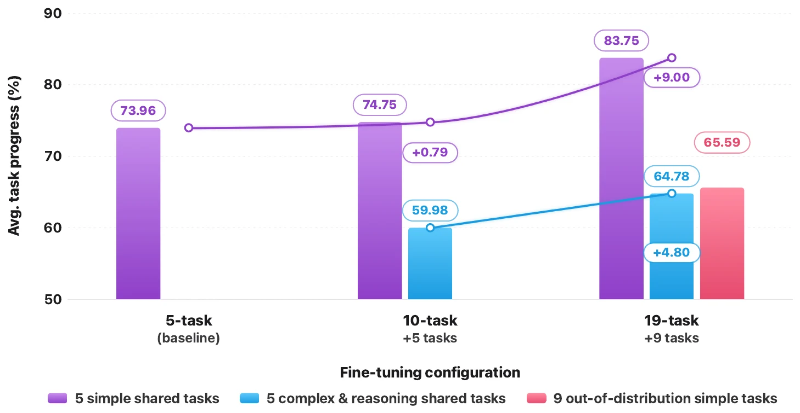
提升来自更广的能力覆盖。作者推测提升更可能来自细粒度能力层面的补充，而不是整任务的直接迁移。新增 9 个任务整体形态差别大，但可能补上原训练数据在原子动作模式、语言表述和状态变化分布上的空白；例如接近、对准、抓取、调整、放置这些原语在新任务里被更充分地看到，不同的物体描述方式、指代形式和环境扰动也扩展了“动作-语言-状态”组合空间的覆盖。新任务的贡献更可能是补全可复用的中间能力，而不是学一组独立的新策略。
表 9 的 19 任务列里，10 任务配置之外新增的 9 个是：杯子三角 60、勺子进碗 98、眼镜架 65、套圈 89、颜色方块 97、倒水 27、电源线 36、物体进篮 100、笔袋 26.5，和 598.5，平均 66.50，不是图 7 和正文的 65.59（差 0.91；65.59 × 9 = 590.3，差 8.2 分）。其余数字都对：5 个共享任务（放杯子、包裹、方块、开关、插花）5 任务 (82 + 50.8 + 100 + 70 + 67) / 5 = 73.96，10 任务 (91 + 50.75 + 100 + 53 + 79) / 5 = 74.75，19 任务 (81 + 82.75 + 100 + 76 + 79) / 5 = 83.75；10 个共享任务 10 任务列 599.75 / 10 = 59.975，19 任务列 647.75 / 10 = 64.775。所以图 7 蓝柱是 10 个共享任务的平均，图例“5 complex & reasoning shared tasks”应为 10 个；只看那 5 个“复杂”任务（摆台、充电器、水果、数字、碎纸），10 任务列平均 45.2、19 任务列 45.8。另外，那 5 个所谓“复杂和推理”任务全来自零样本套件（表 5），和 §4.2.1 的“推理”子集不是同一批。
为了看联合训练对多模态理解的影响，选 5 个代表性基准（详细分数在 A.2），分两组：通用视觉问答（RealWorldQA、ERQA）和与机器人执行直接相关的具身理解（EO-Bench 场景理解、Embodied Grounding 目标定位、Where2Place 放置推理），以 VLM 主干 Qwen2.5-VL-3B 为基线。Embodied Grounding 是内部构建的基准，样本从机器人动作轨迹里抽取、标注。
图 8 是各基准上相对主干的变化。结果显示联合训练带来一种“专门化”：成绩从开放域 VQA 移向和机器人执行更相关的具身感知信号。
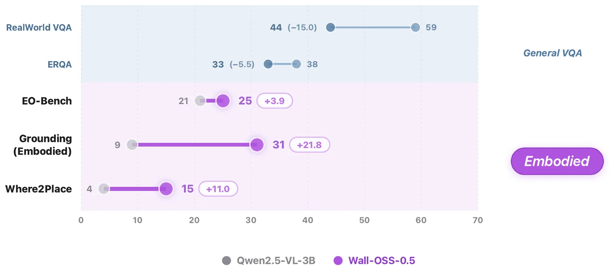
具身理解明显提高。最大的提升在面向机器人操作的目标定位（具身定位 +21.8）：在机器人第一视角里找到操作目标（例如“找到桌上的红杯子”）。这和开放域定位不同：主干在这个基准上基线很低（9.0），超出了它原本的预训练重点。放置推理 Where2Place（+11.0）和具身场景理解 EO-Bench（+3.9）也有明显提高。这些正对应机器人执行流程里的核心感知需求：“看哪里、指哪里、放哪里”。作者还提到：在预训练的试跑中，具身桥接数据不够时，强的动作 token 预测目标会让常见机器人观测分布上的多模态分数大幅下降。所以 §3.2 的 1200 万条桥接样本不只是额外的 VQA 数据，而是机器人视角的定位和空间决策监督，用来平衡动作 CE 带来的专门化压力。
通用 VQA 在专门化下退步。RealWorldQA −15.0、ERQA −5.5，和 VLA 联合训练带来的专门化压力一致。作者认为，对以动作执行为主要目标的 VLA，这个取舍合理：放弃部分开放域 VQA 能力，换来具身空间决策信号的提升，而不是和专门的 VLM 拼通用图像理解。
可视化。图 9 对比两者在具身场景里的定位和空间推理：Wall-OSS-0.5 更准地定位操作目标、选择和可操作区域一致的放置位置；主干更容易漂向视觉上显眼但和任务关系不大的区域。
摘要说“action training does not erode grounded vision-language competence”“preserves broad vision-language ability”。但两个通用 VQA 基准都是下降：RealWorldQA 59.2 → 44.2，相对降了 25.3%（15.0 / 59.2）；ERQA 38.3 → 32.8，相对降 14.4%。正文 §4.3 自己也写的是“General VQA regression”。“不侵蚀”只对具身那三项成立。另外这里只有 5 个基准，其中具身定位是内部基准、数据来自自己的轨迹，和训练用的具身桥接数据同源。
比较四种训练策略，都从头训（只有 VLM 主干用预训练初始化）：联合训练、梯度截断、先截断再联合、只用流匹配。都跑 70k 步，在 5 个真机消融任务上，配置相同。这 5 个任务是为了从头训可行而选的子集，绝对数和 §4.1 的 17 任务评测不可比，只支持四种策略之间的相对比较。四种策略的区别在于流匹配梯度能不能到达 VLM 主干、有没有动作 token CE：
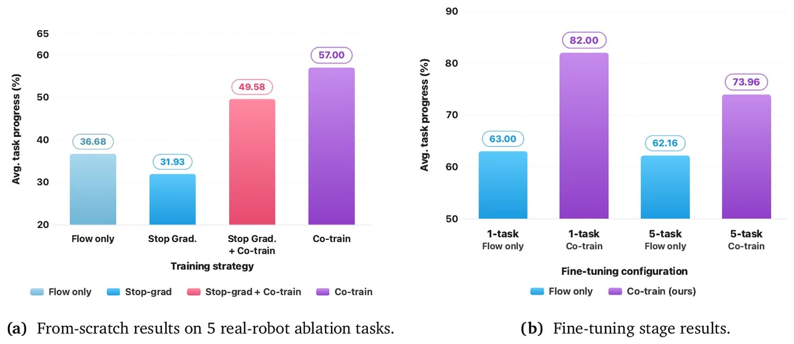
图 10a：联合训练平均任务进度 57.0%，高于只用流（36.6%）、梯度截断（31.9%）和先截断再联合（49.6%）。这支持 §1 的说法：去掉三种信号中的任何一种（只有流、没有桥、或两阶段替代）都会让真机表现掉 7.4–25.1 个百分点。四种策略的 VQA 分数挤得很近，梯度截断略高一点。
VQA 略高的梯度截断，在动作任务上分数最低，而且每个任务都是如此。训练中梯度截断的流损失收敛更慢、最终更高，说明动作专家欠拟合。联合训练的流损失比只用流和梯度截断收敛都快，最终值低于梯度截断、和只用流相当。据此预训练阶段采用联合训练。
这一结论也延伸到微调：离散动作 token 同样给 VLM 主干更高效的适配信号，加快新任务的学习（图 10b）。所以微调阶段也用“离散动作 token + 多模态数据”的联合训练。
图 10b 单任务联合 82.00 = 表 9 放杯子 Cup Grasping 的“1-task”列 82；5 任务联合 73.96 = 图 7 的 5 任务配置 73.96（表 9 的 5 任务列重算也是 73.96）。所以单任务实验做的就是放杯子。图 10b 的“只用流”两次运行没有逐任务数字。VQA 分数四种策略“挤得很近”，但论文没有给具体数。
论文说微调保留“离散 + 连续”联合目标，而且图 10b 显示只用流会差很多（单任务 63 对 82）。但 wall-x 的公开示例 workspace/example/libero.yml、maniparena_example.yml、arrange_3_flowers_wrc_red.yml 都没有设 action_tokenizer_type。trainer/trainer_utils.py:53-60 在这个键为空时不建分词器；data/backends/lerobot/utils.py:450-452 随后把 <|action_fast|> 占位删掉，样本里没有离散动作 token 可学；数据里也没有多模态样本。所以 ar_loss_weight: 0.01 虽然写了，实际起作用的只有流匹配（我的推断，依据上述行号，未运行）。另外示例用 AdamW 而不是 DMuon。即便想打开离散通路，公开代码也只有 FAST 和 SpatialVLA 两种分词器（读者注 12）。用公开代码微调得到的可能更接近图 10b 的“只用流”那一列。
在 LIBERO 仿真里对比动作空间损失（§2.2.2）和传统的速度场流匹配损失。两种条件用和预训练相同的模型结构，权重从 Qwen2.5-VL 初始化，动作专家从头训；全局批大小 128，其余超参数完全相同。
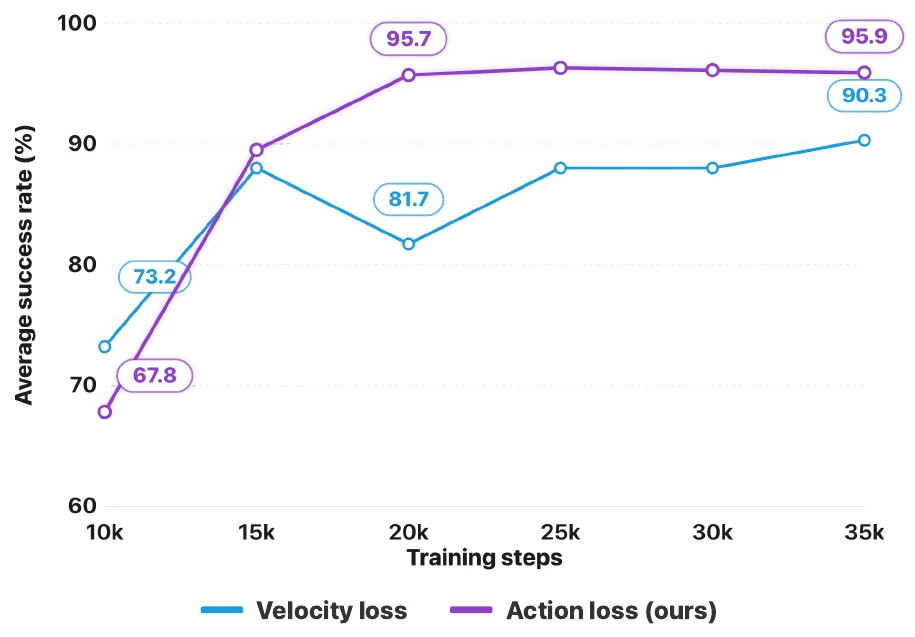
表现。动作空间损失在 25k 步达到平均成功率峰值 96.5%，比速度空间损失的峰值高 6.2。收敛速度上，动作空间损失 20k 步就到 95.8%，速度空间损失跑满 35k 步也没超过 90.3%。
训练稳定性。速度空间损失在 20k 时有明显波动，动作空间损失 20k 之后一直在 92.5%–96.5% 之间。唯一的例外是早期（10k），速度损失略好。这和设计动机一致：动作空间损失相当于对速度损失做 \((1-\tau)^2\) 重加权，早期低噪声段的梯度信号相对稀疏；一旦通过高噪声监督学到了低频轨迹结构，表现就快速上升。作者认为这些结果支持在动作空间里定义损失，也符合机器人动作信号的频谱特点：有用信息集中在低频，高噪声段是主要的质量瓶颈。
图 11 是位图，我按网格线（100 在第 23 行像素、60 在第 506 行）标定读了没标数的点：动作损失 15k ≈ 89.5、25k ≈ 96.3、30k ≈ 96.1；速度损失 15k、25k、30k 都 ≈ 88.0（读图，误差约 ±0.2）。和正文对比：(1) 正文说 20k 是 95.8，图上标的是 95.7；(2) 峰值“96.5% 在 25k”，图上 25k 约 96.3；(3) “20k 后一直在 92.5%–96.5%”，图上 20k 后四个点在 95.7–96.3，没有低到 92.5 的点。“比速度峰值高 6.2” = 96.5 − 90.3 对得上，“+6.2%”也是百分点。图 12 的“+18.9”按两柱标的 48.1 − 29.3 = 18.8，差 0.1，可能是未四舍五入的值相减。另外，LIBERO 的“平均成功率”是四个套件的平均还是别的口径、每个任务跑几次，论文没写。
为验证视觉对齐 RVQ 分词器相对 FAST 的作用，在相同联合训练设置下只换分词器，从 VLM 主干权重开训。评测 4 个真机任务和 1 个 VQA 任务；真机评测用联合训练下流匹配通路生成的连续动作。
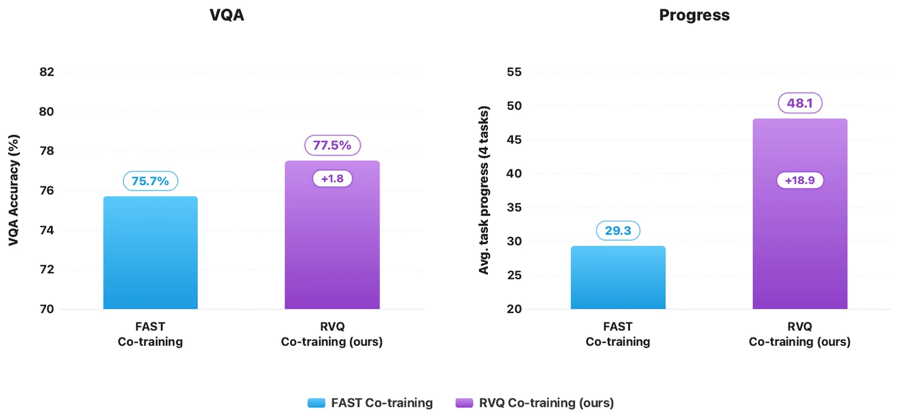
多模态理解。RVQ 分词器不但没损害 VQA，还把准确率从 75.7% 提高到 77.5%。作者认为训练分词器用的辅助多模态目标（视觉-动作对齐、下一帧预测）塑造的 token 表示，也帮助了 VLM 整体的视觉语义理解。
任务表现。平均任务进度从 29.3% 提高到 48.1%。真机评测用的是流匹配生成的连续动作，不是直接解码离散 token，所以分词器的收益不只在离散通路：联合训练中更好的离散表示也提高了连续动作的生成质量。
这一节展开成了一个单独的概念专题：VLA 设计空间：常见改动分别在改哪个部件（部件图、6 种接法、22 个模型总对照表）。
动作表示。把预训练 VLM 改成 VLA，主流做法是直接建模连续动作分布，用扩散（Diffusion Policy）或流匹配。本文关注离散和潜在动作表示。RT-2 和 OpenVLA 把动作离散成类文本 token，证明 VLM 的语义知识能迁移到控制，也暴露了逐维朴素离散化的精度上限。FAST 用 DCT 提高 token 效率，但仍是规则式压缩，语义容量有限；VQ-BeT、FasTer、OAT 等基于重建的方法同样把分词限于几何信号压缩。这些方法只从动作出发，忽略环境状态和任务意图，追求数值重建误差而不是抽象的行为含义。近来的工作偏向语义化、上下文感知的表示，有两条路：生成式语义分词（ActionCodec、LipVQ-VAE、LAPA、UniAct 把轨迹投到离散潜在动作 token）；用对比学习保留信息（DecisionNCE、CLAP 用跨模态对比目标把动作映到和视频或语言对齐的结构化空间）；UniT 给人到人形的策略引入统一的物理语言。最接近的是 π0.5：它把基于 FAST 的自回归通路和流匹配通路一起训。本文有三点不同：学出来的视觉对齐 RVQ 分词器；把离散通路分析为梯度桥；流匹配的动作空间监督。另一条线（GR-2、DreamZero、LingBot-VA）先通过视频生成学世界动力学，再迁移到动作预测。
能执行动作的 VLM 结构。核心难点是加入动作生成又不覆盖 VLM 里的语义知识。六类：(1) 在多任务机器人数据上从头训单个 Transformer，绕开 VLM 迁移（RT-1、Gato、Octo、双臂扩散模型 RDT-1B）；(2) 复用预训练 VLM，把动作当作额外离散 token 由同一个 Transformer 消化（RT-2、OpenVLA、RoboFlamingo、TinyVLA、X-VLA、SpatialVLA、3D-VLA），保留语言接口但精度绑在分词方案上；(3) 保留 VLM 主干、接连续动作头，例如 π0 系列加一个对基本冻结的主干做交叉注意力的流匹配动作专家，把推理能力和低层控制精度解耦；(4) 分层或双系统，把推理和执行分开（Gemini Robotics、GR00T-N1、Galaxea G0 配一个大 VLM 规划器和较轻的控制器；Hi Robot、Embodied-CoT、CoT-VLA、OneTwoVLA、ChatVLA 在出动作前加显式推理步）；(5) 用视频生成世界模型替代 VLM 主干，把动作当作预测的下一帧观测的结果（GR-1、GR-2、Cosmos Policy、mimic-video）；(6) 给策略加显式记忆或时间上下文模块（MemoryVLA、ContextVLA、CronusVLA、TraceVLA、MEMER、SAM2Act）。最接近的是 CogACT（认知和动作分成独立模块）和 HPT（具身专属的输入干加共享主干）。本文用每层都有 VL 专家和动作专家的 MoT 延续这种协同设计：两个专家通过共享注意力交互、参数分开，把专家划分的作用从通用的知识分片转向模态和功能路由。
机器人数据和具身定位。Open X-Embodiment、DROID、RoboMIND v1 / v2、RoboCOIN、AgiBot World 持续扩大机器人数据的规模和多样性。本文的预训练混合在规模上可比（每 epoch 超过一百万条轨迹、20 多种具身），但围绕部署而不只是规模组织：用任务级幂次采样缓解长尾，再加大量从动作语料合成的具身桥接样本，把视觉理解连到可执行的动作语义，而不只依赖通用 VQA 数据。
本文提出一个可操作的论断：足够大规模的 VLA 预训练已经能产生可测量的真实机器人行为，同时检查点也是明显更强的下游适配先验。
设计上的含义。梯度桥机制说明：即便部署最终靠连续动作，离散动作 token 仍有价值。它的主要作用在预训练：动作 token CE 提供强的、VLM 原生的监督通道，直接把主干塑造成可控的表示。只用连续动作训练时，主干主要只受到相对弱的流匹配残差信号；梯度截断则把表示学习和连续控制优化解耦，两个目标不能完全互相加强。这个视角也把两个看似独立的设计统一起来：MoT 路由给连续动作计算分配专门的参数容量，又不切断流向 VLM 主干的梯度；具身桥接数据让多模态锚更“懂动作”，在更接近实际执行的环境里保住有依据的理解。两者目标相同：把预训练多模态模型变成可执行的机器人策略，又不把它压成一个狭窄的任务专用控制器。
局限。(1) 梯度桥的动态只在 3B VLM 主干上验证过，更大的主干可能明显改变三种训练信号之间的相对几何和相互作用强度。(2) 当前模型只用单帧图像输入，对需要时间记忆和持续状态跟踪的长程任务，零样本表现可能受限。(3) RVQ 分词器和训练管线绑定在固定的 26 维动作表示上，难以直接用到灵巧手和其他高自由度具身。(4) 任务评测依赖人工设计的评分规则（A.5），真机基准还没有覆盖多机器人协作、长时间部署和更开放的交互。
未来工作。扩到更大的 VLM 主干；为长程任务加入时间观测和分层规划；探索能支持多种形态的更通用动作表示。作为开源项目，会继续发布权重、训练代码和评测工具。
后续发生的事（来自 HF 模型卡，不是本报告的内容）：2026 年 10–11 月发布的 WALL-OSS 1.0-lite 预览换成了 Qwen3.5 主干，并加了关键帧记忆，正好对应局限 (1)(2)，见下一节。
Wall-OSS-0.5 是 X Square Robot 团队的合作成果，27 人：Ryan Yu*、Pushi Zhang*、Starrick Liu*、Brae Liu*、Miracle Kang*、Shalfun Li*、Lights Shi、Ellie Ma、Ping Yang、Chris Pan、Jerry Chen、Dongxiu Liu、Rain Sun、Miles Guo、Byron Zhang、Hugo Zhou、Zach Xu、Vincent Chen、Harrison Huang、James Wang、Dance Kuzi、Andy Zhai、Hang Su、Roy Gan、Lucy Liang†、Hao Wang‡、Qian Wang（* 核心贡献者，† 项目负责人，‡ 通讯作者）。参考文献 100 条（第 24–28 页）。
见过任务在表 5，没见过任务在表 6。每个任务 10 条轨迹，按预设评分规则打分（满分 100）。类别缩写：Sem. 语义理解、Rigid 刚体、Def. 柔性、Fine 精细、Long 长程多步。原文加粗的是每个任务在各检查点中的最高值，这里用粗体标出。
| 任务 | 类别 | 50k | 100k | 200k | 300k | 350k | 400k |
|---|---|---|---|---|---|---|---|
| 方块分拣 Block Sorting | Sem. | 46 | 85 | 87.5 | 51.5 | 96 | 100 |
| 水果分拣 Fruit Sorting | Sem. | 41 | 19 | 81 | 61 | 61 | 96 |
| 数字排序 Number Ordering | Sem. | 45 | 65 | 32 | 60 | 56 | 54 |
| 按开关 Switch Pressing | Sem. | 7 | 18 | 46 | 30 | 38 | 55 |
| 套圈 Ring Stacking | Rigid | 18 | 18 | 51 | 73 | 100 | 86 |
| 放杯子 Cup Grasping | Rigid | 48 | 70 | 63 | 58 | 56 | 64 |
| 叠毛巾 Towel Folding | Def. | 9 | 8 | 11.5 | 10 | 10 | 10 |
| 摆餐桌 Table Setting | Def. | 6 | 15 | 8 | 10 | 10 | 9 |
| 碎纸 Paper Shredding | Def. | 28 | 10 | 23 | 12 | 18 | 18 |
| 插充电器 Charger Plugging | Fine | 5 | 2 | 2 | 6 | 6 | 9 |
| 插花 Flower Arranging | Long | 30 | 34.5 | 37.5 | 54.5 | 57 | 51 |
| 包裹分拣 Package Sorting | Long | 29.75 | 36.25 | 39.25 | 58.5 | 68.75 | 48.5 |
| 见过平均 | 26.1 | 31.7 | 40.1 | 40.4 | 48.1 | 50.0 |
| 任务 | 类别 | 50k | 100k | 200k | 300k | 350k | 400k |
|---|---|---|---|---|---|---|---|
| 玩具放进篮子 Toy Basket Plcmt. | Sem. | 45 | 71 | 66 | 60 | 72 | 58 |
| 拉紧绳子 Rope Tightening | Def. | 26 | 30 | 54 | 60 | 62 | 82 |
| 倒豆子 Bean Pouring | Def. | 12 | 50 | 19 | 13 | 50 | 60 |
| 擦桌子 Table Wiping | Rigid | 38 | 36 | 32 | 26 | 28 | 38 |
| 盖锅盖 Pot Lid Covering | Rigid | 0 | 18 | 23 | 15 | 26 | 30 |
| 没见过平均 | 24.2 | 41.0 | 38.8 | 34.8 | 47.6 | 53.6 |
(1) 图 1 右上卡片写“4/17 个任务不微调就 ≥ 80%，其中 3 个没见过”。按表 5、6 的 400k 列，≥ 80 的是方块 100、水果 96、套圈 86（都是见过）和拉紧绳子 82（没见过），没见过的只有 1 个；就算取每个任务所有检查点的最高值，没见过任务里也只有拉紧绳子过 80（其余最高 72、60、38、30）。正文 §4.1.1 的说法是“6 个 ≥ 60，其中 4 个 ≥ 80、2 个没见过”，是对的；图 1 的“3 unseen tasks”应是笔误或指别的口径，未核实。
(2) 图 1 左边的曲线只有 5 个点：25.5、34.5、39.8、47.9、51.1，横轴刻度是 50k、100k、300k、350k、400k。表 2 有 6 个检查点，200k 是 39.8、300k 是 38.7。图 1 把 39.8 画在了 300k 的位置，并省掉了 300k 的回落，曲线看起来单调上升；图 6 画的是完整的 6 个点。
(3) 图 1 中间的雷达图有五个类别（容器放置 65.0、空间排布 54.5、受约束和顺序操作 24.3、语义分拣 58.1、连续接触装载 48.7），还画了 Fast-WAM 和 X-VLA 的微调结果。这五个类别和数字、以及 Fast-WAM 和 X-VLA 的对比，正文和附录都没有出现（X-VLA 只在相关工作里提到，Fast-WAM 全文没有）。无法核对。
“31 个任务” = 17 个零样本 + 15 个微调 − 1（套圈两边都有）= 31，和表 10 的 31 行一致。表 10 每个任务满分应是 10 分；逐行加：多数正好 10，例如充电器 2 + 3 + 4 + 1、放杯子 3 + 2 + 2 + 2 + 1、物体进篮 4 × (1 + 1.25) + 1。但：摆餐桌“叠餐巾 2 + 每步 1 分（7 步）”= 9；收拾笔袋“打开 3.5 + 每件 1 分（3 件）+ 拉上 1.5 + 收手 1”= 9；拉紧绳子“每只手接近 2 + 抓绳 4 + 拉紧 2”，按每只手各 2 分算是 10，按共 2 分算是 8；杯子三角“每个杯子拿起 1 + 摆放 1–3，顶上 3，收手 1”无法唯一求和。我的推断：这些是表述不全，不影响“任务进度 = 得分 / 满分 × 100”的定义，但具体满分没法从表里确定。包裹分拣“每个包裹拿起、放下、条码朝上，6 个包裹”没写分值，表 5 里出现 29.75、68.75 这样的 0.25 粒度。
| 维度 | 基准 | 任务描述 | Qwen2.5-VL-3B | Wall-OSS-0.5 | 变化 |
|---|---|---|---|---|---|
| 通用 VQA | RealWorld VQA | 真实场景图像的开放式 VQA | 59.2% | 44.2% | −15.0 |
| 通用 VQA | ERQA | 具身场景里的实体识别和关系问答 | 38.3% | 32.8% | −5.5 |
| 具身场景 | EO-Bench | 具身操作场景的综合视觉理解 | 20.8% | 24.7% | +3.9 |
| 具身定位 | Emb. Grounding* | 在机器人第一视角图像里用点坐标定位目标物体 | 9.0% | 30.8% | +21.8 |
| 放置推理 | Where2Place | 预测合理的放置位置坐标 | 4.0% | 15.0% | +11.0 |
五个“变化”逐项相减都对：59.2 − 44.2 = 15.0，38.3 − 32.8 = 5.5，24.7 − 20.8 = 3.9，30.8 − 9.0 = 21.8，15.0 − 4.0 = 11.0。
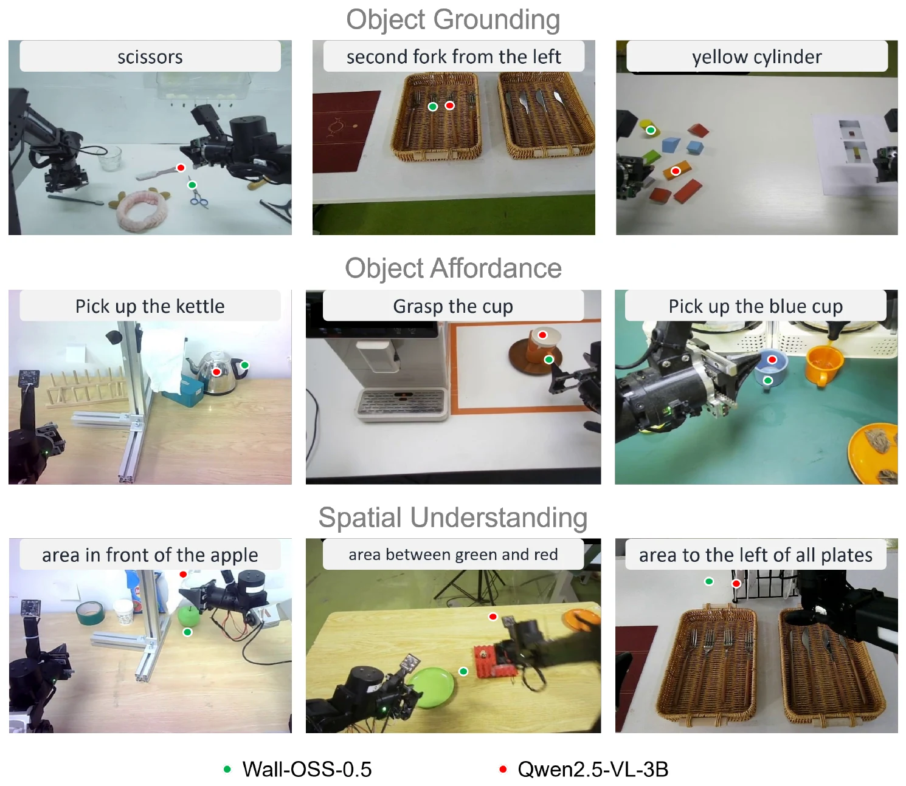
| 任务 | 类别 | Wall-OSS-0.5 | π0.5 | DreamZero |
|---|---|---|---|---|
| 颜色方块分拣 Color Block Sort. | 操作 | 96 | 42 | 27 |
| 套圈 Ring Stacking | 操作 | 91 | 60 | 27 |
| 勺子进碗 Spoon-in-Bowl | 操作 | 80 | 43 | 54 |
| 物体进篮 Obj.-to-Basket | 操作 | 74.8 | 37 | 97.8 |
| 眼镜放上架 Glasses Rack | 操作 | 66 | 87 | 37 |
| 杯子三角堆叠 Cup Triangle | 操作 | 58 | 18 | 25 |
| 整理抽屉 Drawer Org. | 操作 | 52 | 7 | 7 |
| 插电源线 Power Cord | 操作 | 50 | 21 | 24 |
| 倒水 Water Pouring | 操作 | 25 | 19 | 12 |
| 收拾笔袋 Pencil Case | 操作 | 18.5 | 16 | 26 |
| 水果放进篮子 Fruit Basket | 推理 | 86 | 94 | 45 |
| 耳机分拣 Earphone Sort. | 推理 | 82 | 73 | 66 |
| 物体配对 Object Matching | 推理 | 44.5 | 51.5 | 13.5 |
| 形状分拣 Shape Sorting | 推理 | 68 | 63 | 36 |
| 按顺序按按钮 Seq. Button | 推理 | 16 | 13 | 3 |
原文表 8 的“粗体为行最大”没法从 pdftotext 看出，上面的粗体是我按数字标的。
| 任务 | 类别 | 19 任务 | 10 任务 | 5 任务 | 1 任务 |
|---|---|---|---|---|---|
| 放杯子 Cup Grasping | Rigid | 81 | 91 | 82 | 82 |
| 包裹分拣 Package Sorting | Long | 82.75 | 50.75 | 50.8 | – |
| 方块分拣 Block Sorting | Sem. | 100 | 100 | 100 | – |
| 按开关 Switch Pressing | Sem. | 76 | 53 | 70 | – |
| 插花 Flower Arranging | Long | 79 | 79 | 67 | – |
| 摆餐桌 Table Setting | Def. | 18 | 18 | – | – |
| 插充电器 Charger Plugging | Fine | 35 | 24 | – | – |
| 水果分拣 Fruit Sorting | Sem. | 90 | 91 | – | – |
| 数字排序 Number Ordering | Sem. | 59 | 66 | – | – |
| 碎纸 Paper Shredding | Def. | 27 | 27 | – | – |
| 杯子三角堆叠 Cup Triangle Stack. | Long | 60 | – | – | – |
| 勺子进碗 Spoon-in-Bowl | Rigid | 98 | – | – | – |
| 眼镜放上架 Glasses Rack | Rigid | 65 | – | – | – |
| 套圈 Ring Stacking | Rigid | 89 | – | – | – |
| 颜色方块分拣 Color Block Sort. | Sem. | 97 | – | – | – |
| 倒水 Water Pouring | Fine | 27 | – | – | – |
| 插电源线 Power Cord | Fine | 36 | – | – | – |
| 物体进篮 Obj.-to-Basket | Sem. | 100 | – | – | – |
| 收拾笔袋 Pencil Case | Fine | 26.5 | – | – | – |
19 任务配置里新增的 9 个任务，正是表 8 的 10 个操作任务去掉整理抽屉。两张表的 Wall-OSS-0.5 分数：勺子 80 对 98、物体进篮 74.8 对 100、电源线 50 对 36、笔袋 18.5 对 26.5、颜色方块 96 对 97、套圈 91 对 89、眼镜 66 对 65、杯子三角 58 对 60、倒水 25 对 27。表 8 是 15 个任务一起微调一个模型，还是每任务单独微调，§4.2.1 没写；表 9 是 6 个 epoch 的多任务微调。两者的类别标注也不同（表 8 全写“操作”，表 9 分 Rigid / Sem. / Fine / Long，例如物体进篮在表 9 里归为 Sem.）。差别的来源论文没解释，未核实。另外 A.4 的标题说“包括叠毛巾”，但表 9 里没有叠毛巾这一行。
本报告的真机评测共 31 个任务，统一按步骤计分：每个任务满分 10 分，按关键操作阶段累加。任务进度 = 实际得分 / 满分 × 100。每个任务评 10 条轨迹；成功率定义为完整完成全部步骤的轨迹占比（正文只报告任务进度，没有报告成功率）。
| 任务 | 描述 | 评分规则 |
|---|---|---|
| 方块分拣 | 把 5 个彩色方块按颜色放进对应托盘 | 每放对一个 2 分，共 5 个 |
| 水果分拣 | 按指令抓指定水果放进指定托盘 | 抓取 4，放对托盘 5，收手 1 |
| 数字排序 | 按规律把数字卡片排成正确顺序 | 每张对 1 分（共 7 张），全对再加 3 |
| 按开关 | 手臂移到电灯开关并按下 | 到位 3，按下 4，收手 3 |
| 套圈 | 把圈套到竖杆上 | 抓圈 3，移到杆 3，套上 3，收手 1 |
| 放杯子 | 把杯子放到盘子上，要先把盘子推到中间 | 推盘 3，扶正杯子 2，拿起 2，放下 2，收手 1 |
| 叠毛巾 | 依次拿起、铺开、折叠、放好 2 条毛巾 | 每条：拿起 1，铺开 1.5，折叠 1.5，放好 1 |
| 摆餐桌 | 摆西餐桌：叠餐巾、放盘子、餐具等 | 叠餐巾 2，每步 1 分（7 步） |
| 碎纸 | 从架上取纸送进碎纸机 | 每张：抓 1 + 送入 2；3 张，收手 1 |
| 插充电器 | 拿起充电插头插进插座，需亚厘米级对准 | 拿起 2，握持 3，插入 4，收手 1 |
| 插花 | 拿起 3 枝花插进花瓶 | 每枝：抓 1.5 + 放 1.5；3 枝，收手 1 |
| 包裹分拣 | 取出包裹，条码朝上，放到区域内 | 每个：拿起、放下、条码朝上；6 个包裹 |
| 玩具放进篮子 | 拿起 4 个玩具放进篮子，不能弄翻 | 每个玩具 2 分（4 个），篮子稳 1，收手 1 |
| 拉紧绳子 | 双臂：抓住松弛的绳子拉紧 | 每只手接近 2，抓绳 4，拉紧 2 |
| 倒豆子 | 把豆子从袋子倒进盆里；双臂 | 移盆 2，袋子到盆上方 2，抓袋底 3，倒出 3 |
| 擦桌子 | 拿起布擦掉油渍 | 接近 2，拿起 2，全部擦掉 5，放回 1 |
| 盖锅盖 | 拿起锅盖盖到锅上 | 接近 2，拿起锅盖 3，盖上 4，放回 1 |
| 杯子三角堆叠 | 倒扣 3 个杯子摆成三角：下 2 上 1 | 每个：拿起 1 + 摆放 1–3；顶上 3，收手 1 |
| 勺子进碗 | 把碗移到中间，勺子放进碗里 | 碗 2，移动 2，勺子 2，放进碗 3，收手 1 |
| 眼镜放上架 | 拿起眼镜，调整，放上架子 | 拿起 2，居中 2，调整 2，上架 3，收手 1 |
| 整理抽屉 | 按类别把物品放进对应层的抽屉 | 每层：打开 1 + 放入 1 + 关上 1；3 层，收手 1 |
| 颜色方块分拣 | 把 RGB 方块放到同色色块上 | 每个对 3 分，3 个，收手 1 |
| 倒水 | 从水壶往杯子里倒水 | 移杯 2，水壶 2，倒 3，放下 2，收手 1 |
| 插电源线 | 双臂：左手拿线递给右手，右手插入 | 左手抓 3，右手接 3，插入 3，收手 1 |
| 物体进篮 | 拿起 4 个物体放进篮子 | 每个：拿起 1 + 放入 1.25；4 个，收手 1 |
| 收拾笔袋 | 双臂：拉开拉链，放入物品，拉上 | 打开 3.5，每件 1 分（3 件），拉上 1.5，收手 1 |
| 耳机分拣 | 在杂物中找到耳机放进篮子 | 识别 2，拿起 3，放入 4，收手 1 |
| 形状分拣 | 按形状把 3 个物体放到对应位置 | 每个对 3 分，3 个，收手 1 |
| 按顺序按按钮 | 按指令顺序按 3 个按钮 | 每按对一次 3 分，3 个，收手 1 |
| 物体配对 | 把成对的物体配好放到位置 | 每对：抓 2 + 放 2.5；2 对，收手 1 |
| 水果放进篮子 | 把指定水果放进篮子 | 每个对 3 分，3 个，收手 1 |
先回答问题：按目前公开的模型卡，WALL-OSS 1.0 不是世界模型，是 VLA。它没有论文，以下全部来自 Hugging Face 模型卡和配置文件（2026-11-23 用 curl 核对），我没有下载权重、没有运行。
| HF 仓库 | 是什么（模型卡原话的意思） | 日期 |
|---|---|---|
| wall-oss-1.0-lite-robodojo | “基于 Qwen3.5 的 VLA 策略”，在 RoboDojo 示范上微调，用于 RoboDojo 基准评测（经 XPolicyLab）。预测双臂 arx_x5 机器人的 32 步原生末端位姿动作块（末端位姿 + 夹爪），再由残差精修器连续精修 4 次；有关键帧记忆：重读最近一段头部相机帧，决定保留哪些。只支持 arx_x5 的末端位姿动作，只在 RoboDojo 仿真里训练，“没有在真机上验证”。Apache-2.0 | 2026-10-23 创建 |
| wall-oss-1.0-lite-robodojo-base | 上面那个 RoboDojo 训练的起点预训练模型，“Wall-OSS-1.0-lite 的预览，先于正式版发布，和正式版不完全相同，主要差在训练迭代数”。分词器和对话模板用 Qwen/Qwen3.5-4B 的。5,323,759,872 个参数（F32）。Apache-2.0 | 2026-11-02 创建 |
核实了题目里那几条说法：
和 0.5 的关系。相同：同属 wall-x 体系（serving 代码在 wall-x 的 PR #128“Qwen3.5 VLA release with RoboDojo serving and CUDA operators”，截至 2026-11-23 仍未合并，模型卡让用户先用一个个人分支）；MoT（use_mot、mlp_moe、norm_moe）；26 维动作布局；本体按文本数字 token 表示；流匹配时间步采样参数相同；用 DMuon。不同：主干从 Qwen2.5-VL-3B 换成 Qwen3.5（4B 级）；动作专家宽 1280、用 adaRMS 注入时间；use_x_loss: false，也就是 1.0-lite 没有用 0.5 的动作空间监督（式 5）；RoboDojo 微调配置里 ar_loss_weight: 0.0、action_tokenizer_type: null，微调时不用离散动作 CE；加了关键帧记忆和残差精修。关键帧记忆正好回应 0.5 §7 的局限“只用单帧图像”，换更大主干回应“只在 3B 上验证”。
只有模型卡来源。1.0 的训练数据和预训练配方都没有公开文档。上面所有判断都只依据模型卡和配置文件，不代表正式的 1.0 版本。它的评测成绩只有第三方的 RoboDojo 榜单，见下一节。
数据来源：2026-11-24 用无头浏览器渲染 RoboDojo 排行榜（页面标“Updated 2026.11.18”，新闻更新到 11-22），对照它的评测协议和论文 arXiv 2607.04434。榜单还在持续更新，排名以后会变。
RoboDojo 是什么。港大等机构 2026-07-06 发布的机器人操作基准，由非营利组织 AI MMLab Club 维护。
| 榜单 | 比什么 | WALL-OSS-1.0-lite |
|---|---|---|
| RoboDojo-Sim（主榜） | 端到端策略（VLA、世界动作模型等）在 42 个仿真任务上的表现。默认按 5 个维度的平均 Score 排序，共 60 个模型 | 第 1：42.59 / 34.97% |
| RoboDojo-RealWorld | 18 个真机任务，三种机械臂，看真实部署和跨机械臂泛化 | 没有参加；模型卡写明“没有在真机上验证”。目前第一是 SLA-Preview（42.33 / 33.89%） |
| RoboDojo-Agent | 大模型智能体系统，例如用 GPT-6 Astra、Claude 写代码或调用技能库来控制机器人。平均分不含“开放”维度。多数条目带 *，表示不完全符合 11-14 新发布的规则 | 不适用（不是智能体） |
| RoboDojo-Gen | 只看“泛化”维度，拆成 Gen-Std（标准场景）和 Gen-Rand（随机背景、光照、杂物） | Gen-Std 第 2（53.44，第一 Motubrain 2.0 是 61.06）；Gen-Rand 第 1（39.88） |
| RoboTwin 2.0 | 同一团队更早的另一个仿真基准，有 clean2clean（易）和 clean2random（难）两种设置，经 XPolicyLab 接入 | 没有参加 |
| Per-task | 每个仿真任务的逐项分数 | 见下文 |
结论：按默认排序，第一是真的，但领先很薄，而且主要来自“开放”维度里的两个任务。换个排法，名次如下（只算 60 个非智能体条目）：
| 排序方式 | WALL 名次 | WALL | 第一名 |
|---|---|---|---|
| 平均 Score（默认） | 1 | 42.59 | —（第二 Motubrain 2.0 41.28） |
| 平均 SR | 1 | 34.97% | —（第二 Motubrain 2.0 33.91%） |
| 不含开放的平均 Score | 2 | 48.05 | Motubrain 2.0 49.95 |
| 不含开放的平均 SR | 5 | 38.82% | Motubrain 2.0 40.91% |
| 泛化 Score / SR | 1 / 2 | 46.66 / 37.94% | Motubrain 2.0 39.17%（SR） |
| 精度 Score / SR | 8 / 9 | 38.16 / 29.08% | Motubrain 2.0 44.90 / 35.83% |
| 长程 Score / SR | 5 / 9 | 49.94 / 32.25% | Simate-beta 57.84 / 43.42% |
| 记忆 Score / SR | 1 / 2 | 57.42 / 56.00% | Bagel-Robotics-1 56.89%（SR） |
| 开放 Score / SR | 2 / 2 | 20.76 / 19.58% | Awomo-0.5 24.09 / 22.92% |
和榜上 π0.5、π0 的差距不能当成“结构更好”的证据。
榜单本身的规则还算严格：
页面渲染出来的文本里，我没有看到 WALL 条目的验证状态标记。
主榜顶上那两行淡色的“Fable 5.2 64.90”“Opus 5.5 39.40”是什么。它们是智能体方案，在主榜上淡色显示、不参与排名，所以 WALL 的名次不受影响。
论文每个设计点在 wall-x（ce2a1ae）和 HF 检查点里的位置。路径省略前缀 wall_x/。“一致”指数值或公式对得上；“缺失”指公开代码里没有。
| 论文 | 原文说法 | 代码 / 配置 | 对照 |
|---|---|---|---|
| §2.1.1 主干 | Qwen2.5-VL-3B-Instruct 初始化，MoT，> 4B | HF config.json：36 层，VL 专家 2048 / 11008，动作专家 1024 / 2048；共 4.162B 参数 | 一致 |
| §2.1.1 路由 | 视觉 / 语言 / 本体 / 离散动作 → VL 专家；连续动作 → 动作专家 | model/core/action/moe.py:9-26；data/backends/lerobot/loader.py:654 | 一致 |
| §2.1.1 掩码 | 离散和连续动作 token 互相看不见；梯度不截断 | model/core/attention/mask.py:53-155（:100-110 对离散预测位置置零） | 一致；另有 ar_visible 开关可让两者互看（:131） |
| §5.1 梯度截断 | 知识隔离式 stop-gradient | model/core/attention/joint.py:788-925 flash_mask_ki，调用外部 flashmask_attn_func_stop_gradient | 有实现，默认不用 |
| §2.1.2 RVQ 分词器 | 视觉对齐 RVQ，替代 FAST | model/qact/tokenizer_mixin.py:938-941 只有 fast、spatialvla | 缺失（读者注 12） |
| 式 (1) | λ_act = λ_mm = 0.01 | model/core/vla_mixin.py:655, 702；示例 yml ar_loss_weight: 0.01 | 一致（同一个旋钮，读者注 11） |
| §3.2 9 : 1 混合 | 动作 : 多模态 = 9 : 1 | 无（只见 x2_multimodal 名字，normalizer.py:286） | 缺失 |
| 式 (2) | 线性高斯路径 | model/core/action/processor.py:169-172 | 一致 |
| 式 (3) | Beta(1.5, 1)，τ = s(1 − u)，s = 0.999 | data/backends/lerobot/loader.py:664-692；HF noise_scheduler | 一致 |
| 式 (4)(5) | 速度输出，动作空间损失 | processor.py:288-302；HF use_x_pred: false, use_x_loss: true | 一致；代码默认关（读者注 10） |
| §2.2.3 接口 | 具身系统提示；Observation / Instruction / Proprioception | data/backends/lerobot/utils.py:356-404，系统提示固定为“helpful assistant” | 格式一致，系统提示不同 |
| §2.2.3 本体 | 离散成文本数字 token，随机丢弃 / 扰动 | utils.py:541-561；HF state_bins: 512；示例 yml 改为连续投影 | 部分一致（读者注 19） |
| §2.2.3 动作空间 | 26 维，6D 相对旋转，1 秒时域 | HF config.yml 26 维，action_horizon 32 | 一致 |
| §2.2.4 优化器 | Muon（专家二维参数）+ AdamW；DMuon | trainer/optimizer/dmuon/utils.py:54；核心在外部包 dmuon | 接入层有，算法在别的仓库 |
| §2.2.4 预训练超参 | 批 8192，峰值 1e-4，余弦 + 预热，裁剪 1.0，bf16 | 模板 yml：1e-4、余弦、预热 1000、裁剪 1.0、bf16；批大小随 GPU 数 | 可配置 |
| §2.2.4 微调 | 5e-5，全参数，保留联合目标 | 示例 yml：AdamW 5e-5；无分词器 | 学习率一致，目标不同（读者注 13） |
| §2.3 推理 | 10 步；CUDA Graph；融合 RoPE、RMSNorm | modeling_qwen2_5_vl_act.py:2064-2160；utils/cudagraph_wrapper.py:14（未调用）；ops/csrc/binding.cu:49-68（无 RMSNorm） | 部分缺失（读者注 14） |
| §3.1.3 预处理、平方根采样 | 统一动作、对齐、静止帧过滤、p = 0.5 | 无；只有 x2robot2lerobot.py、rotation_layout.py | 缺失 |
以下按 wall-x 的 README.md、workspace/README.md、scripts/README.md 和 HF 模型卡整理，提交 ce2a1ae。我没有运行任何命令。
conda create --name wallx python=3.10 && conda activate wallx
pip install -r requirements.txt
export FLASH_ATTN_CUDA_ARCHS=$(python -c 'import torch; print(f"{torch.cuda.get_device_capability()[0]}{torch.cuda.get_device_capability()[1]}")')
MAX_JOBS=4 pip install flash-attn==2.8.3 --no-build-isolation
pip install "dmuon @ git+https://github.com/X-Square-Robot/dmuon.git"
git clone https://github.com/huggingface/lerobot.git && (cd lerobot && pip install --no-deps -e .)
pip install -r requirements-libero.txt # 只有 LIBERO 评测需要
git clone https://github.com/Lifelong-Robot-Learning/LIBERO.git third_party/LIBERO
MAX_JOBS=8 pip install --no-build-isolation -e . # 安装时编译 CUDA 算子
权重：huggingface-cli download X-Square-Robot/wall-oss-0.5（含 config.json、model.safetensors、归一化器），另需 Qwen/Qwen2.5-VL-3B-Instruct 作处理器。单卡训练至少 48 GB 显存（workspace/README.md:188）。也可以走 LeRobot 原生实现：pip install "lerobot[wall_oss_05]"，--policy.path=lerobot/wall-oss-0.5，模型卡说要用 LeRobot PR #4200 的代码，26 维状态 / 动作、32 步块、10 步流采样，前缀只算一次。
huggingface-cli download lerobot/libero --repo-type dataset --local-dir /path/to/libero_all cp workspace/example/libero.yml my_libero.yml # 改 config_path / processor_path / repo_id / norm_stats_path / resume_from python scripts/compute_norm_stats.py --train_config my_libero.yml --data_root /path/to/libero_all --output_path libero_norm.json torchrun --nproc_per_node=4 wall_x/trainer/fsdp_trainer/train_fsdp.py --config my_libero.yml python scripts/merge_sharded_weights.py /path/to/sharded /path/to/merged # FSDP 分片时 CHECKPOINT_PATH=... TRAIN_CONFIG_PATH=my_libero.yml TASK_SUITE_NAME=libero_spatial NUM_TRIALS_PER_TASK=50 bash scripts/run_libero.sh # ALL_SUITES=1 跑四个标准套件；SMOKE=1 每任务 1 次冒烟测试
示例配置要点（workspace/example/libero.yml）：7 维动作（3 位置 + 3 ZYX 欧拉 + 1 夹爪）加 19 维零填充到 26，8 维状态加 18 维填充；action_horizon 10；两路相机 256；AdamW 5e-5、余弦 20 万步、预热 1000；每卡批 4 × 梯度累积 4；resume_from 指向 0.5 的 model.safetensors。数据集 lerobot/libero。论文没有报告 0.5 的 LIBERO 微调成绩，所以没有官方数字可对。
数据转成 LeRobot v3，照 workspace/example/maniparena_example.yml（双臂、6D 相对动作、448、3 路相机）改配置；dof_config 和 agent_pos_config 的总和要和 norm_stats.json 一致，不足 26 维用 action_padding 补。推理起 WebSocket 服务 bash scripts/run_serving.sh --checkpoint-path ... --train-config-path ... --port 32195，默认返回原始动作块，--serialize-actions 返回机器人格式；开环对比用 scripts/draw_openloop_plot.py。RTX 5090 的部署说明在 workspace/rtx5090/DEPLOY.md。最小可跑的例子是 python scripts/fake_inference.py --checkpoint-path ...（假输入，验证输出形状）。
以下各条都是本页加的核算或对照，不属于论文内容。点编号跳到对应位置。
HF API 报 x-square-robot/wall-oss-0.5 的 safetensors 共 4,162,224,832 个参数（BF16 4,158,769,152，F32 3,455,680）；lerobot/wall-oss-0.5 的转换版是 4,162,219,008，少 5,824 个 F32 参数，模型卡说 837 个神经网络张量完全保留，差的应是归一化统计之类的非网络张量（我的推断）。“4B VLA、3B 主干”的说法和总数相符；主干和动作专家各占多少我没有逐张量统计，未核实。
论文没写、我也没找到的：RVQ 分词器的码本大小、级数和各项损失权重；预训练总步数之外的训练时长和算力；多模态 9 : 1 混合的实现；零样本和微调评测里机器人的具体型号；每个结果的方差或重复次数。
文中提到的数据集、基准、模型和代码。2026 年 11 月 23 日用脚本核对，除 FAST 项目页（返回 429，改链 arXiv）外全部返回 200。